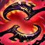
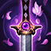
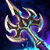

Naafiri Mid
Personalized guide for soup minion#NA1 · Patch 26.13 · July 2026
Labels: VERIFIED multi-source fact-checked · SINGLE SOURCE · REASONING from current-patch numbers, verify in practice tool · YOUR DATA from your 59 Naafiri games this season.
YOUR DATA Mid Naafiri is your best champion: 62% WR this season, 9.5 kills/game. The two leaks keeping the account at Gold 3 are kill participation (~43%; 8 of 28 ranked losses at ≤32%) and losses ending at ~27 min — faster than your wins. You lose games in the mid game while farming away from the map, not late. One skill fixes it: converting lane advantage into map presence, minutes 8–25 (§6–7).

Packmates attack your targets. Damage multiplier, DoT-keystone applicator, and skillshot shields vs mages.

Q1 bleeds; Q2 detonates remaining bleed + missing-health bonus, and heals you vs champions. Treat the two casts as one input — Q1 hit means Q2 always follows. Throw Q1 when their movement is committed (stepping up to last-hit, mid-cast animation) or after you've conditioned a dodge direction — never at neutral. A missed Q1 is your whole offense on cooldown: play it like Zed after both Qs whiff — back off until it's up again.

On cast: 1s untargetability (your only one — see R), then a 5s hunt: +20% bonus AD, faster packmates, and 2 extra packmates arriving 1.25s after cast. You can move during the 0.75s cast, and each R cast extends the hunt 1.75s. All-in steroid and defensive cooldown in one button — the timing rules are in §1b. VERIFIED

Dash + two-hit AoE, no cast time; gains bonus range through terrain — a real wall-hop VERIFIED. Packmates vanish during the dash and reappear healed to full. Your gap-closer and only escape. Count their answers before spending it: E-ing in while their charm/hook/exhaust is up is diving without a dash home — the mistake every Akali makes once per game. In poke lanes, hold E to sidestep the return skillshot after your Q; a held E also changes how they play, the same way an unused Fizz E does.

VERIFIED Champion takedown within 7s of cast → reveal pulse + one free recast within 12s, and the recast grants a 3s shield (100/150/200 + 150% bonus AD). Stack with Axiom Arc's takedown ult-refund: R → kill → shielded free R → kill → half the CD already back. Play it like Katarina plays resets: the first kill isn't the end of the play, and you should know target #2 before you press R the first time.
Two facts most Naafiris get wrong VERIFIED: during the dash only the packmates are untargetable — you are not (W is your untargetability, not R); and the 0.75s channel disables your other casts — but inputs pressed during the dash are queued and fire the instant you land (§1b tech).
Sources: Mobalytics S26 combo page + League wiki mechanics; each combo cross-checked against current cast times and buffer rules. Q1/Q2 = the two Darkin Daggers casts, AA = auto.
| Combo | Input | When & why the order matters |
|---|---|---|
| Bleed trade (poke) VERIFIED | Q1 → wait 1–2 ticks → Q2 | Your bread-and-butter poke. Q2's detonation scales up to +250% with missing HP, so letting the bleed tick first makes the same Q hit harder and heal more. Opposite rule on waves: detonate instantly so the cooldown starts. |
| Extended trade VERIFIED | Q1 → AA → E → Q2 → AA | When they step up. The AA fills Q's 0.5s recast lockout; E has no cast time so it lands mid-trade — aim it at them to stick or away to make it poke-and-out; Q2 last for the amp. |
| Pre-6 all-in VERIFIED | Q1 → W → E → AA-AA → Q2 | Kill-threat trade without R. W while walking at them (you keep moving during its cast): the 1s untargetability eats their trade-back, +20% AD boosts the rest, and the 2 bonus packmates land right as you E in. HoB variant in §2b. |
| Post-6 all-in — the core combo VERIFIED | W → Q1 → R (queue Q2) → E → AA-AA | W first, always: its buffs live through the whole route, R extends the hunt 1.75s, and its untargetability absorbs their first answer during your R channel. Q1 before R so the bleed ticks during the dash; Q2 queued during the dash detonates on landing; E follows their sidestep. |
| Edge-of-range all-in SINGLE SOURCE | Q1 → R → Q2 → E | Simpler variant when they're at max range: Q1 and R both reach 900. Vs Zhonya's/stopwatch: run them down with E and bait it before committing R. |
| Flash burst SINGLE SOURCE | Q1 → W → Q2 → Flash → E → AA | Cheese kill on a low target hugging tower range. Q2 banks the detonation first; Flash→E is instant on arrival. Hard — practice-tool it first. |
| Fog pick SINGLE SOURCE | R → queued Q1 → AA → E → Q2 → AA | Roam opener from a bush/fog. Hold W here — it's your panic button against the peel that answers the dive, not part of the opener. Note the 0.75s channel reveals you to the target: expect one reaction. |
| Teamfight reset weave VERIFIED | R carry → any takedown ≤7s → recast (3s shield) → target #2 | Any champion takedown arms the recast — not just your R target. Ult the backliner while your bled target dies to your team; the recast shields you before the second dash and can target through fog (the takedown reveals 4s). One W covers both dives. Details §8. |
| Escape VERIFIED | W → E through a wall | W's 1s untargetability drops the targeted spell or turret shot mid-flight; E's terrain bonus range makes thin walls jumpable. You lose no distance — W casts while you run. Post-takedown, a defensive R recast (shield + dash to a safer enemy) is the advanced exit. |
Keystone data, Emerald+ mid 26.13, lolalytics n≈54k, re-verified twice VERIFIED: Hail of Blades most-picked and highest WR (53.7%, 25.2k games) · Deathfire Touch right behind (53.3%, 14.7k — your default is statistically sound, 0.4pp off the top) · Electrocute lags (51.8%, 11.9k) · Conqueror is a trap in lane (49.4%). At your elo the champion is even better: Gold mid Naafiri is S-tier, rank 4 of 98 (52.67%, 78k games).
 SETUP A — Hail of Blades DEFAULT TARGET — highest WR + most picked; needs the §2b route
SETUP A — Hail of Blades DEFAULT TARGET — highest WR + most picked; needs the §2b route| Primary — Domination | Secondary — Sorcery | Shards | Build order |
|---|---|---|---|
| Hail of Blades Sudden Impact Sixth Sense Treasure Hunter | Transcendence Scorch | Attack Speed Adaptive Health | Lethality core: Doran's →  Brutalizer (1st back) → Brutalizer (1st back) →  Voltaic → Voltaic →  Glutt. Greaves (→ Immortal Path) → Glutt. Greaves (→ Immortal Path) →  Axiom Arc → Axiom Arc →  Serylda's → situational (§3) Serylda's → situational (§3) |
VERIFIED 53.7% WR on 25.2k games — the best-performing page in the biggest sample. It only pays when you commit to the three autos (§2b, §1b pre-6 all-in); if you catch yourself pure-poking, you're playing Setup B with a dead keystone.
 SETUP B — Deathfire Touch lethality YOUR DEFAULT — poke lanes, and every game you don't feel the all-in
SETUP B — Deathfire Touch lethality YOUR DEFAULT — poke lanes, and every game you don't feel the all-in| Primary — Sorcery | Secondary — Precision | Shards | Build order |
|---|---|---|---|
| Deathfire Touch Manaflow Band Transcendence Scorch | Legend: Haste Cut Down | Adaptive Adaptive HP% | Doran's → Brutalizer → Voltaic → Glutt. Greaves → Axiom Arc → Serylda's (Eclipse-first also fine on this page — see Setup D note) |
VERIFIED This exact page is lolalytics' DFT cohort (53.3% WR, 14.4k games — every rune row confirmed live), and it's your page: your 38 games run it at 62%. The keystone is legitimate, not a comfort tax. Know its 26.11 nerf: the burn is magic-only now, paying out over seconds — it rewards your poke pattern, not the all-in.
 SETUP C — Electrocute ALTERNATIVE — burst feel without the HoB commitment
SETUP C — Electrocute ALTERNATIVE — burst feel without the HoB commitment| Primary — Domination | Secondary — Precision | Shards | Build order |
|---|---|---|---|
| Electrocute Sudden Impact Grisly Mementos Treasure Hunter | Presence of Mind Coup de Grace | Adaptive Adaptive Health | Same lethality core as Setup A/B: Doran's → Brutalizer → Voltaic → Glutt. Greaves → Axiom → Serylda's |
YOUR DATA Your existing Electrocute page (14 games). Procs off Q1 + packmates + one auto — fits your poke pattern. The current-patch data has it ~1.5–2pp behind HoB/DFT (51.8%), so it's the third option now, not the first.
SETUP D — DFT Bruiser VS BULKY COMPS — 2+ divers/juggernauts on you, or no frontline of your own| Primary — Sorcery | Secondary — Precision | Shards | Build order |
|---|---|---|---|
| Deathfire Touch Manaflow Band Transcendence Scorch | Legend: Haste Cut Down | Adaptive Adaptive HP% | Doran's → Caulfield's →  Eclipse → Glutt. Greaves → Eclipse → Glutt. Greaves →  Black Cleaver → Black Cleaver →  Death's Dance → Death's Dance →  Endless Hunger or Maw (vs AP) → Maw (vs AP) →  GA GA |
VERIFIED per-slot, DFT games only: Eclipse 1st 54.1% (58% at Gold, directional), Cleaver 2nd 55.4%, Death's Dance 62.7% as 4th, Endless Hunger 68.8% as 4th (all keystones), GA the closer. This is your build with two data-driven changes. (1) Endless Hunger/Maw over Spirit Visage: SV's +25% heal amp is mechanically real on your Q heal/DD/omnivamp but statistically invisible (~21 games league-wide); Maw covers the same MR need with 60 AD and data behind it. (2) Eclipse earns its slot here, not on lethality pages: its 2-hit proc (6% max-HP damage + shield) pays both ways in extended trades, but as a lethality first item it's -2pp vs Voltaic — buy it only in this build. Axiom Arc still slots 2nd over Cleaver when you're getting takedowns (55.0%). MEASURED The burst tax is ~⅓ vs the same target (§5) — this build wins rotations two and three, never rotation one. Cleaver note: 26.11 made the DFT burn magic-only, so the burn no longer stacks Carve — but your packmates and Q bleed stack it near-instantly anyway (wiki-verified), covering the ~88% of your damage that's physical.
| Component | Builds into | Buy it when |
|---|---|---|
| The Brutalizer (1337g) | Voltaic (+2 Long Swords), Axiom Arc (+Caulfield's), Profane Hydra, Bastionbreaker — the core uses two | Default first back on Setups A/B/C |
| Caulfield's Warhammer (1050g) | Axiom Arc, Serylda's, Hubris, Eclipse, Death's Dance, Endless Hunger, Maw | Second back, or first back on Setup D |
 Serrated Dirk (1000g) Serrated Dirk (1000g) | Hubris, Edge of Night, Youmuu's, Serpent's Fang, Umbral, Bastionbreaker — NOT Voltaic | Only when pivoting Hubris (§4) or an EoN/utility slot |
| Last Whisper (1450g) | Serylda's Grudge | Third-item territory |
Boots timing: every verified sequence, Emerald+ through Master+ (op.gg, lolalytics), slots completed boots as the second full purchase: first legendary → boots → second legendary. Basic Boots (300g) on an early back only if you have spare gold and the lane punishes slow feet (skillshot mids). Never sit on tier-1 boots to the mid game — "T1 boots only" games run 38.8% WR. Immortal Path is a free Feats-of-Strength upgrade (0g) — take it the moment it's offered. No site publishes purchase minute-stamps (onetricks.gg is bot-walled, leagueofgraphs blocks fetches), so treat "boots ~min 12–15" as approximate. Note lolalytics' most-common mid line opens Hubris → Greaves → Voltaic; op.gg and Master+ data open Voltaic, and Voltaic-first is what your winning games run — treat Hubris-first as the snowball variant, per §4.
HoB does nothing until you commit to auto range — it plays like a Diana or Kata all-in: poke is only there to set up the one committed sequence. Condition minutes 1–5 with normal Q1 poke so they respect it. The read: they're ~60% and just burned their dash/shield on a Q or a last-hit. The sequence: W (pre-cast) → E in → AA-AA-AA (the three HoB autos — skipping these wastes the keystone) → Q1 → Q2 → R if they flash. Post-6, R opens the same sequence from 900 range and a kill hands you the shielded recast home. Ten practice-tool reps, then normals until automatic.
One takedown event simultaneously fires: R free recast + shield · Axiom Arc CD refund · Hubris AD stack · Gluttonous Greaves omnivamp stack · Death's Dance cleanse/heal · Endless Hunger omnivamp burst. Her itemization isn't a stat checklist — it's stacking payouts onto the same event her ultimate already rewards. First kill in a fight → everything comes back online → second dive. That's the whole champion.
| Item | What it does for her | What it opens up |
|---|---|---|
| Voltaic Cyclosword 3000g 53.6% WR / 87% of games | Ability hit triggers Energized: next auto = 9% of target's current HP phys + 15 lethality for 4s. Charges by moving — W/R movement speed and your roams charge it for free. | Kill pressure from even — no conditions, every engage. R → landing auto front-loads the 9% chunk before they react. First item in every setup for a reason. |
| Axiom Arc 2750g 55.9% / 61%; standard 2nd | Takedown within 3s of damaging → refunds 10% (+0.25% per lethality) of R's total CD — ~20–25% at full build, stacking with R's own free recast. | The teamfight loop: R more than once per fight, and the §7 tempo (mains measured ~20–30s effective late-game R CD after a double takedown — single source, but the formula backs it). This is why it's in every build, including bruiser. |
| Serylda's Grudge 3000g 58.1% / 45%; standard 3rd | 35% armor pen + your abilities slow targets under 50% HP by 30%. | Bruisers join your kill list (§5 measured: ~90% of a bruiser at this spike), and low-HP targets can't walk away from Q2 or the dogs. Buy 3rd by default, earlier vs 2+ armor-stackers. |
| Gluttonous Greaves 1000g 55.7% — best boots by +4pp | 4% omnivamp, +0.6% per takedown (max 10 stacks) — and your Q bleed + packmates all feed it. | The sustain engine: poke that heals you, all-ins you exit healthier than you entered. Ionian/Mercs/Steelcaps all cost ~4pp of win rate — buy them only for a named threat, not comfort. |
| Item | What it does for her | What it opens up |
|---|---|---|
 Edge of Night 3000g Edge of Night 3000g57.7% / 36%; 3rd–4th | Spell shield + 250 HP + 15 lethality. | Engaging through the one ability that kills you — hook, snare, charm, Malphite R. The direct fix for your teamfight deaths (§8). Mains' rule: buy vs "things that fk your ult or get you picked" (Lux, Blitz, Jhin, Teemo). |
 Hubris 2800g Hubris 2800g53.5% first / 58.7% second | +12 AD (+3 per kill) for 90s on takedown. | Snowball compounding — full rules in §4. Also legitimate 2nd–3rd once you're already ahead, not just first. |
 Youmuu's Ghostblade 2800g55.8%, n=895 | 20 MS out of combat; active: 20% MS + ghosting 6s. | Roam tempo — the §6 map game as an item. The alternative to Hubris when ahead: kills come from being places first, not from bigger numbers. |
 Serpent's Fang 2500g Serpent's Fang 2500g52.8%; 57.6% as 5th | Damaging a champion cuts shields they gain by 50% for 3s (and existing shields on first hit). | Kills through Shen/Karma/Lulu/Sterak's. Cheapest legendary in her pool — a fast, targeted answer, 2nd–5th as needed. |
 Umbral Glaive 2800g56.1%, n=132 — sleeper | 60 AD/18 leth/15 AH; auto-sweeps and instantly kills wards near you. | The pick game: your §6 "hunt the warder" rule as an item. Small sample, real logic. |
 Profane Hydra 2850g Profane Hydra 2850g55.2%, n≈1k | Tiamat + Brutalizer — AoE cleave + execute active. | Waveclear-into-roam tempo when you're shoving five waves a game. Fell out of favor post-midscope (Voltaic does the killing better); niche now. |
| Bastionbreaker 3200g 56.9%, n=654 | Brutalizer + Dirk (eats both forks). Abilities deal bonus true damage; takedowns empower your next tower hit. | The anti-tank lethality slot when Serylda's isn't enough, plus real split-push teeth. Overperforms quietly in her data. |
Traps & gone VERIFIED: The Collector — crit is wasted on her kit (packmates don't crit); 0.75% pick for a reason. Opportunity — removed from the game in 26.9; ignore any build still listing it. Sundered Sky / Sterak's / Stridebreaker / Hullbreaker / Ravenous — essentially unplayed on her (n≤30 each league-wide); no data supports any of them.
| Item | What it does for her | What it opens up |
|---|---|---|
| Eclipse 2900g 54.1% first under DFT only | 2 hits within 2s → 6% max-HP physical + a shield (160 +40% bAD, 6s CD). Q1→Q2 or Q→E procs it on demand. | Trading into melee range: the proc pays both ways — damage on them, shield on you. Still only correct as a DFT-page first item; on lethality pages it's -2pp vs Voltaic, whose current-HP proc front-loads harder. |
| Black Cleaver 3000g 55.4% 2nd under DFT | 6% armor shred per physical hit, 5 stacks — your packmates and Q bleed ticks stack it near-instantly (wiki-verified). 400 HP, +20 MS on hit. | The whole team's physical damage vs armor-stackers, plus the HP to stand in the fight you're shredding. |
| Death's Dance 3300g 57.1%; best 4th (59.8–62.7%) | Incoming damage deferred over 3s; takedown cleanses the stored damage and heals. | Surviving the collapse that answers your dive — and the takedown-loop makes the cleanse near-guaranteed when you dive right. Vs sustained AD. |
| Endless Hunger 3100g 64.4% overall; 68.8% as 4th | 65 AD, 5% omnivamp, 20% tenacity; takedown → 15% omnivamp for 8s. | The highest-WR bruiser-flavored item she has (selection-biased — winners buy it — but the tenacity + takedown-omnivamp fit is real). Fights that last two rotations. |
| Maw of Malmortius 3100g 57.2% as 4th; trap 1st (45%) | Magic shield below 30% HP + 10% omnivamp until combat ends. 60 AD keeps your damage. | Diving fed AP through their burst window. Hexdrinker (1300g) is the early version in bad AP lanes. |
| Guardian Angel 3200g 61.3%; best 5th (63.4%) | Revive at 50% base HP after 4s. | The closer: when you're the win condition, GA converts "confident flank" into "free flank". Standard ~min 32. |
 Spirit Visage 2700g Spirit Visage 2700gn≈21 league-wide — theorycraft | 400 HP/50 MR; +25% to all your heals and shields (Q heal, DD, omnivamp, R-recast shield). | Your comfort pick. The multiplier is mechanically real and nobody has disproven it — but nobody's proven it either. If you keep it, know it's a belief, not a stat. |
Grievous Wounds is a flat 40% on Summoner's Rift — no escalation. All her GW options run sub-52%, so buy for the named healer only: Executioner's Calling (800g) as the early stopgap → Chempunk Chainsword if the slot should be bruiser (450 HP; delay to 4th) or Mortal Reminder if it should be pen — but Mortal Reminder and Serylda's are both Fatality items: the shop only lets you own one.
Aggregate WRs on late/defensive items are survivorship-biased — buy for the named problem, not the number. Boot alternatives: Swifties 56.2% (n=742) are real anti-kite tech vs slow-stack comps; Mercs/Steelcaps only under heavy specific threat — they trade away the omnivamp engine.
REASONING Setups A–D (§2) are complete answers to four different games — the skill is picking one at the loading screen instead of defaulting. Four questions, thirty seconds:
| Question | The read | What it changes |
|---|---|---|
| 1. Count their real tanks | SINGLE SOURCE Armor breakpoints (Dodge.gg 2026): under ~80 armor lethality wins; 80–120 even; over ~120 %pen wins. Squishies stay under 80 all game; tanks pass 120 by two items. | 0–1 tanks: Setup B untouched — lethality at its best. 2 tanks: Serylda's climbs to 3rd (over EoN/Hubris). 3+: stop planning one-shots — go Setup D, where Cleaver covers the pen (Fatality rule: it's Cleaver or Serylda's, never both) and you win long fights instead. Either way the tank never becomes your target: SINGLE SOURCE "If you are hitting the frontline first, lethality gets worse. If you are threatening carries first, it gets better." |
| 2. Read their damage — type and delivery | AD, AP or mixed; burst or DPS; autos or abilities. "Armor doesn't save you from AP burst. MR doesn't save you from fed crit autos." | Your defensive slot (4th–5th on A–C, ~3rd on D): AP burst → Maw. Sustained AP → Endless Hunger→Maw. AD autos → GA earlier. Dies-on-entry burst → the W-timing fix (§8) before any item — items don't fix walking in first. Mixed damage → HP-carrying items (Cleaver, EoN, Shojin) beat single resists. |
| 3. Count YOUR frontline | VERIFIED The someone-must-soak rule: "If you are the only melee champion on your team, you need to be able to take hits." A Sejuani jungle or Leona support is your license for full glass. | Real tank on your team → Setups A/B; arrive second; flank "early, patient, lethal." Bruisers-only or all-squishy team → Setup D pulls double duty: second body and cleanup. What you never do: stay full-lethality and walk in first. And an assassin cannot item her way into being a frontline — the fix is a different setup, not a Sterak's taped onto Setup B. |
| 4. Sum their healing & shields | SINGLE SOURCE Anti-heal pays when they heal 1,000+ HP per fight (auto-buy tier: Aatrox, Mundo, Vladimir, Soraka, Yuumi, Briar, Warwick). GW does not touch shields. | Named healer → §3's anti-heal rule, and one GW buyer per team — "two GW items is still 40%, not 80%." Shield stackers (Lulu/Karma/Janna, Shieldbow/Sterak's users) → Serpent's Fang: anti-shield and anti-heal are different problems with different items. |
VERIFIED Runes move with the comp too. The finisher slot is a real choice: Cut Down currently reads "8% increased damage to champions above 60% max health" (re-verified this patch — not the old more-max-HP-than-you version), so it's best into HP-stackers who sit healthy all fight, and it front-loads your opening rotation on full targets. Coup de Grace (8% below 40%) is the resets rune — R executes and Q2's missing-HP detonation love it into squishy comps. And Legend: Tenacity no longer exists (removed 14.10): vs 3+ hard-CC chains the real answers are Mercs, Cleanse, or an Unflinching secondary.
REASONING Your team: bruiser top, no tank. Their team: three tanks, low damage. Walk the audit: (1) Three real tanks — lethality's targets don't exist; pen must be %-based, and your kill target is still their softest carry, probably the one mage. (2) Low damage — their threat is CC, not burst, so defense can wait a full slot. (3) No tank on your side — someone must soak, and that's Setup D, not full-glass Setup B walking in first. Cleaver doubles as your pen answer (Fatality-legal, unlike adding Serylda's to it). (4) Three tanks usually hide a Warmog's or Mundo — check whether a teammate has GW covered. Answer: Setup D (Eclipse → Cleaver → DD), Cut Down over Coup, defense delayed one slot, flank after their engage lands on your bruiser. Now invert it — their three assassins, your Ornn: Setup B untouched, EoN 3rd, Coup de Grace, and you never leave your carries' screen.
REASONING from current tooltips (Data Dragon 16.13.1):
| Voltaic Cyclosword — 3000g | Hubris — 2800g | |
|---|---|---|
| Stats | 55 AD, 10 lethality, 10 haste | 55 AD, 18 lethality, 10 haste |
| Passive | Energized burst on ability hit — unconditional, works every engage | +12 AD (+3/kill) for 90s on takedown — worthless until someone dies |
| Identity | Kills someone from even | Makes kills #2–5 faster; 90s window = fight-every-wave tempo |
Rule: Voltaic is the default. Hubris only when takedowns are already guaranteed — 2–3 kills up before your first completed item in a lane they can't win. Rushing Hubris even is circular: its passive needs kills to give you the stats to get kills.
The fork happens at first back, at the component level: buying Brutalizer commits toward Voltaic/Axiom; buying Serrated Dirk commits toward Hubris (Dirk + Caulfield's). Decide before you shop, not at 2600g.
Gold math: a clean solo kill ≈ 600g swing (300g bounty + ~2 missed waves). Mid legendaries cost 2750–3300g, so ~3 uncontested solo kills ≈ one item of real advantage — at 2–3 kills by first back you're past half an item, which is the Hubris window.
YOUR DATA Practice-tool tested 2026-07-05: full §1b core combo per spike, squishy dummy 1700 HP / 70 armor, bruiser dummy 2300 HP / 120 armor. Your recorded totals are pre-mitigation; converted to actual HP damage with the wiki-verified armor formula (damage × 100/(100+armor); lethality = flat pen 1:1 since 14.1; percent pen applies before flat) REASONING. Lvl-8 row untested (model only).
| Spike | vs Squishy | vs Bruiser | vs Tank | Verdict |
|---|---|---|---|---|
| Brutalizer + boots (lvl 8) | ~68% model | — | — | Kill from ~65%; full-HP kills don't exist yet |
| Voltaic done (lvl 9–10) | ~71% measured: 1934 raw → ~1210 | ~39% model | — | Kill squishies from ~70% — not from full; bruisers are trades only |
| + Axiom Arc (lvl 11) | ~117% measured: 2835 raw → ~1995 | ~60–70% model; your lvl-13 test ran ~25 pts above model, so trust the high end | — | The assassin license, confirmed with margin: a full-HP squishy dies to one R rotation. |
| + Serylda's (lvl 13) | Overkill — a partly-missed Q still kills | ~91% measured: 3252 raw → ~2085 | ~43% model | Bruisers die from ~90% — far better than modeled; tanks never — kite them with the Serylda's slow |
The R tax — measured at 44%: the identical 2-item loadout dealt 2835 with R and 1599 without. With R down you do barely over half your damage — not the ~75–80% the old model claimed. With R down you are a poke champion, not an assassin; this rule is now a law.
The bruiser build's price, measured: Eclipse + Black Cleaver + Death's Dance (lvl 13, DFT) dealt 2346 raw into the same bruiser dummy — roughly a third less burst than the lethality line's 3252 against the identical target. The bruiser build never wins the one-rotation race; it wins by surviving rotations two and three (§2 Setup D).
Recalibrate per patch in 15 min with the same five tests. Tab check in game: their armor outgrowing your lethality = off your kill list.
YOUR DATA 43% KP, low-KP losses at 27 min: lane won, map lost. This is the section that ranks you up.
Lane: your poke loop is right — Q1 at committed movement, packmates chip, hold E for the answer. Level 1–2 (Q→E) you win extended trades; most mids expect passive Naafiri. The one fix: poke that never becomes a kill, plates, or a roam is noise. Once they hit your §5 threshold, commit or leave — usually leave: shove and spend the advantage elsewhere.
Matchups (lolalytics, current patch): hardest — Riven, Talon, Qiyana: melee ADs who win the early all-in. Play those like a Zed lane — E strictly defensive pre-6, concede the level-2/3 window, poke only after their gap-closer whiffs. Best — LeBlanc, Ryze, Mel: packmates eat their skillshots and your all-in outdamages theirs. General: artillery mages are your comfort zone; bruisers flexed mid — poke freely, no all-ins before Serylda's, shove and roam instead.
The rule: every wave crash into their tower = you owe the map a decision — roam, invade with jungler, deep ward, or reset. Never stand in lane waiting for the bounce. That wait is the 43%.
REASONING Kills are currency. While they're grey-screened, buy something, in order: 1) Dragon/Herald/Baron · 2) mid tower/plates · 3) sweep + deep wards (the next pick comes from that darkness) · 4) a crashed wave. Never just recall on a kill.
Mid-game loop when ahead (15–25 min): push side wave → ward flank → look mid for a pick with R up → objective off the pick → next side lane. Each lap is 60–90s and gains something. Your losses exit this loop — quiet side-farming while the enemy groups mid. If they group and no pick is available, join your team immediately: a 2-item Naafiri present beats a 3-item Naafiri arriving late.
5k+ lead at 20 min → group mid, take tower, end by ~28. She falls off as teams group SINGLE SOURCE — your best window is mid game, don't bank on late.
Skeleton verified per stage (Mobalytics 26.13, single source); decision structure is coaching reasoning. Read each chart top to bottom every time its trigger fires.
Goals: hit 1337g for Brutalizer by first back (~minute 6–8) · keep CS ≥ 6.5/min (your winning games average 7.0) · force their escape with poke, then commit once · never trade while your Q is down.
Goals: KP above 50% from here on · every R cooldown spent on a gank, pick, or objective setup · two items by ~16 min in a winning game · cash every kill within 30s (§7 menu).
Goals: zero solo deaths (death timers are 40–60s — one mistake is Baron + the game) · stay within one screen of your team · every fight entry pre-planned: target #1, target #2, exit. She falls off as teams group SINGLE SOURCE — you're not the win condition in a 40-min game, your one pick is.